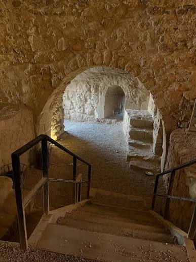
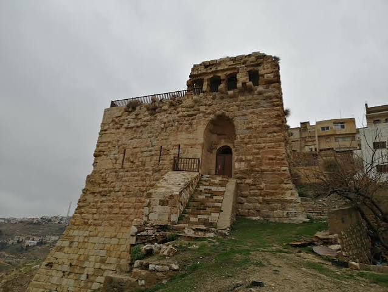
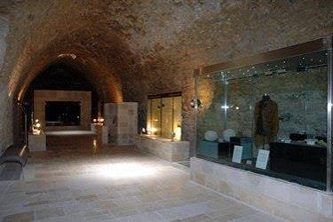
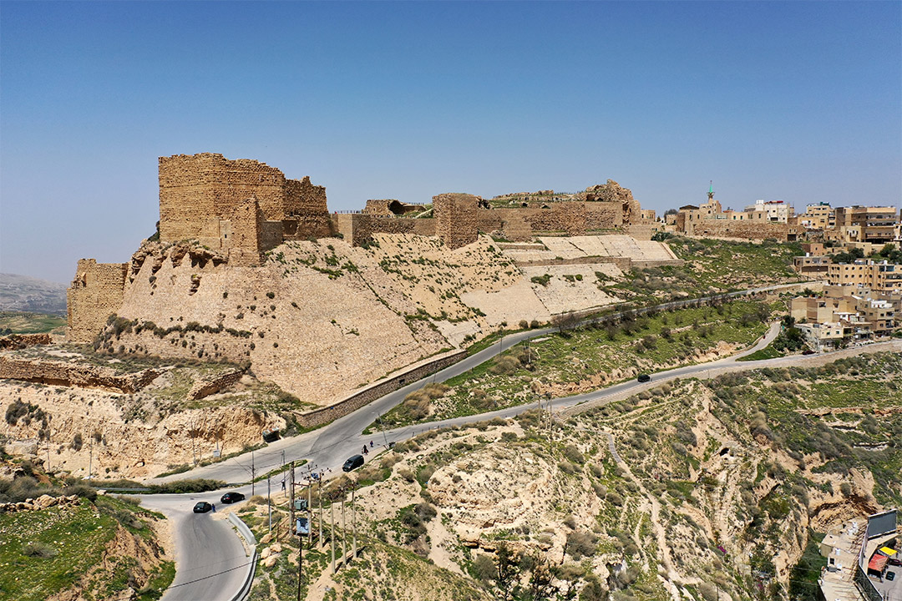

الأسوار الدفاعية
تتميز القلعة بأسوارها الحجرية القوية التي كانت تستخدم لحماية الموقع من الهجمات.
تقع قلعة الكرك في مدينة الكرك جنوب الأردن، وتُعد من أبرز القلاع التاريخية في المنطقة. تتميز بموقعها المرتفع وتصميمها الدفاعي الذي يعكس أهمية المدينة عبر التاريخ.
تقع القلعة في وسط مدينة الكرك، على تلة مرتفعة تطل على المناطق المحيطة بها.
بدأ بناء القلعة خلال الفترة الصليبية في القرن الثاني عشر الميلادي، وتعرضت لاحقاً لتوسعات وتعديلات خلال العصور المختلفة.
كان موقعها الاستراتيجي مهماً للسيطرة على الطرق التجارية والعسكرية في المنطقة، كما استُخدمت لأغراض دفاعية وإدارية.
اكتسبت القلعة أهمية كبيرة بسبب موقعها على الطرق التي تربط جنوب بلاد الشام بمناطق أخرى.
كانت جزءاً من شبكة التحصينات الدفاعية في المنطقة، وشهدت أحداثاً تاريخية مهمة خلال العصور الصليبية والأيوبية والمملوكية.
ومن أبرز الشخصيات المرتبطة بتاريخها القائد الصليبي رينو دي شاتيون، والسلطان صلاح الدين الأيوبي.
تعكس القلعة تطور فنون البناء العسكري واستخدام الحجر والممرات والأبراج في التحصينات القديمة.
تضم القلعة مجموعة من المرافق والممرات التاريخية التي تستحق الاستكشاف.
تتميز القلعة بأسوارها الحجرية القوية التي كانت تستخدم لحماية الموقع من الهجمات.

تضم القلعة ممرات حجرية وغرفاً داخلية تعكس طبيعة التصميم العسكري القديم.

ساعدت الأبراج في مراقبة المناطق المحيطة بالقلعة وتعزيز الحماية.

تضم القلعة غرفاً وقاعات تاريخية استُخدمت لأغراض مختلفة خلال الفترات السابقة.

يتيح الموقع المرتفع للزوار مشاهدة المناظر الطبيعية والمدينة والمناطق المحيطة.
التجول في الممرات والغرف والتعرف على التصميم الدفاعي.
التقاط الصور للأسوار والأبراج والمناظر المحيطة.
اكتساب معلومات عن العصور الصليبية والأيوبية والمملوكية.
استكشاف الأسواق المحلية وتجربة الأطعمة التقليدية والتعرف على ثقافة المدينة.
المعرفة التاريخية: التعرف على تاريخ العصور الوسطى والأحداث التي شهدتها المنطقة.
الثقافة: اكتشاف التراث المعماري والعسكري القديم.
الاستكشاف: مشاهدة الممرات والأبراج والمنشآت التاريخية.
الاستمتاع بالطبيعة: مشاهدة الإطلالات الجميلة من موقع القلعة المرتفع.